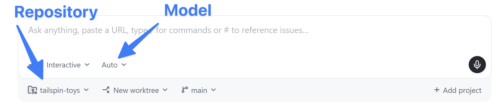
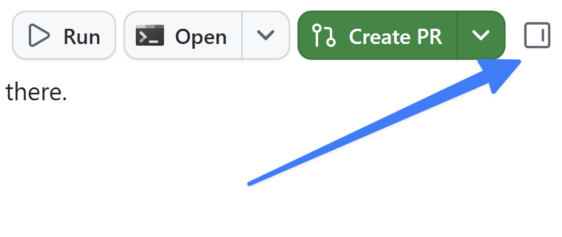
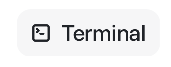

前のレッスンでは、ワークスペースを確認し、クイックチャットを使いました。ここでは、エージェントセッションを開始し、プロジェクトに最初の変更を加えます。変更は小規模なものにします。ゲームのデータにはすでに星評価が含まれていますが、ホームページのゲームカードにはまだ表示されていません。エージェントに表示を依頼し、変更をレビューして、最初の pull request としてマージします。
このレッスンでは、次の内容を学習します。
- エージェントセッションを開始し、セッションの構成を理解する。
- プロジェクトに小規模で対象を絞った変更を加えるようエージェントに依頼する。
- ワークスペースの差分ビューで変更をレビューする。
- アプリをローカルで実行し、ブラウザーで変更を確認する。
- 最初の pull request を作成してマージする。
シナリオ
Tailspin Toys の各ゲームには星評価を設定でき、ゲーム詳細ページにはすでに表示されています。一方、ホームページのゲームカードには、タイトル、カテゴリー、パブリッシャー、説明だけが表示されています。最初のセッションの準備運動として、各カードに既存の評価を表示するようエージェントに依頼します。小規模で自己完結した、最初のセッションに最適な変更です。
セッションの構造
セッションとは、分離された独自のワークスペースで実行されるエージェントとの会話です。すべてのセッションに専用の git worktree とブランチが割り当てられます。そのため、一方では機能を追加し、もう一方ではバグを修正するなど、変更を競合させずに複数のセッションを同時に実行できます。セッションはリポジトリごとにグループ化されてサイドバーに表示され、選択すると切り替えられます。
セッション内には、エージェントとの会話、ファイルを調査および編集するときのエージェントのツールアクティビティ、差分付きの変更済みファイル一覧という3つの要素が表示されます。
セッションを開始して変更を依頼する
新しいセッションを開始し、プロジェクトの調査と機能の実装に取りかかります。前のレッスンでは、GitHub リポジトリからプロジェクトを追加しました。そのリポジトリ用の新しいセッションを作成し、変更を依頼します。
- GitHub Copilot app に戻ります。アプリを閉じている場合は開きます。
- Home screen を選択します。
- リポジトリに
tailspin-toysが選択されていることを確認します。

- 次のプロンプトを使って変更を依頼します。
ゲームカードに各ゲームの星評価を表示してください。Game 型には starRating があり、5点満点の数値、または未評価を示す null が入ります。src/components/GameCard.astro の各カードに表示し、null の場合は「No rating yet」と表示してください。変更は小さく保ち、カードの構造は組み替えないでください。補足 プロンプトに、Copilot が更新するファイル名が含まれていることに注目してください。Copilot が作業に含めるファイルを指定する必要はありませんが、方向性を示すことで、コードをすばやく生成し、トークン使用量を削減できます。
- Enter を選択して、プロンプトを Copilot に送信します。
Copilot app は、最初にプロジェクトの分離されたコピーである新しい worktree を作成して作業を開始します。次にプロジェクトを調査し、新機能の追加に必要な更新対象ファイルを見つけて、必要なコードを作成します。これで Copilot app を使って新機能を追加できました。
差分をレビューする
AI が生成したすべての変更は、どれほど小さくてもマージ前にレビューする必要があります。Copilot app 内で変更を確認します。
- アプリの右上隅にある Toggle review panel を選択します。Copilot が行った未処理の変更がすべて表示される差分画面が開きます。

- ゲームの詳細表示に使用される中心的なファイル
GameCard.astroにコードが追加されていることを確認します。次のような小さなブロックが追加されているはずです。評価がある場合は表示し、starRatingがnullの場合は "No rating yet" を表示します。
{game.starRating !== null ? (
<span class="text-xs font-medium px-2.5 py-0.5 rounded bg-amber-900/60 text-amber-300" data-testid="game-rating">
★ {game.starRating} / 5
</span>
) : (
<span class="text-xs font-medium text-slate-500" data-testid="game-rating-empty">
No rating yet
</span>
)}補足 Copilot は、すべての生成 AI ツールと同様に決定論的ではなく確率的に動作するため、実際のコードは上記と異なる場合があります。ただし、比較的よく似たものになります。
変更を確認する
コードを読むだけで動作すると判断せず、視覚的にもテストします。そのためには、ターミナルからアプリを起動して、すべてが動作することを確認する必要があります。Copilot app にはターミナルが組み込まれています。
- Copilot app の右側にあるレビューパネルで Terminal を選択します。Terminal ボタンがない場合は、+ (Open in panel というラベルが付いています) を選択してから Terminal を選択します。

- ターミナルウィンドウに次のコマンドを入力し、Web アプリの開発サーバーを起動します。
npm run dev- サーバーが起動したら、ブラウザーウィンドウを開きます。起動には少し時間がかかります。
- http://localhost:4321 に移動します。
- ランディングページのすべてのゲームに星評価が表示されていることを確認します。
- ターミナルウィンドウに戻ります。
- Ctrl+C を選択して開発サーバーを停止します。
最初の pull request を作成してマージする
変更に問題がないことを確認できたので、リリースします。エージェントに pull request の作成を依頼し、github.com で自分でレビューしてマージします。今回は手動で管理します。後のレッスンでは、Copilot でこの作業の一部を自動的に処理する方法を確認します。
- 右上隅にある Create PR を選択します。
- 求められた場合は Sign in with your browser を選択し、画面の指示に従って認証します。
- Copilot が PR の作成を開始します。
PR が作成されると、Copilot はリポジトリで実行する必要があるワークフローを監視します。しばらくすると、右上のボタンが Ready to merge に変わります。これは PR をマージする準備が整ったことを示します。
- チャットのすぐ上にある PR バブルを選択し、レビューペインで PR を開いて pull request を確認します。必要に応じて、ここで PR をレビューできます。
- 準備ができたら Ready to merge を選択します。
- 新しいダイアログウィンドウで Merge pull request を選択し、pull request をマージします。
これで Web サイトに新機能を反映できました。
まとめと次のステップ
最初のエージェントセッションを開始し、最初の変更をリリースしました。具体的には、次の作業を行いました。
- エージェントセッションを開始し、セッションの構成を学習した。
- ゲームカードに小規模で対象を絞った変更を加えるようエージェントに指示した。
- ワークスペースの差分ビューで変更をレビューした。
- アプリをローカルで実行し、ブラウザーで星評価を確認した。
- pull request を作成し、github.com で自分でマージした。
次は、アプリを使ってリポジトリにカスタム指示の標準を追加します。バックログ内の Issue の1つから作業を開始します。レッスン 3「カスタム指示による Copilot のガイド」に進んでください。